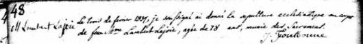
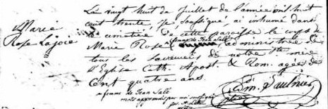

Étienne Provost n'a laissé ni journal ni lettre. On le connaît par les registres, les livres de compte de la traite, les souvenirs des autres. Cette salle réunit ces témoignages, un onglet par corpus, avec leur contexte, leurs découpures et les lieux dont ils parlent.
Dans les journauxVingt-six découpures de 1827 à 1960 : le tavernier de Saint-Louis, la nouvelle du rendez-vous de 1834, l'avis de décès de 1850, les souvenirs de Joseph La Barge, l'origine du nom de Provo, la statue du monument This Is the Place.
L'arbre de la familleLes trois mariages d'Albert Provost à Chambly, les quatorze frères et sœurs d'Étienne, son mariage avec Marie-Rose Lambert, puis la descendance Pillsbury et Grimm à Saint-Louis jusqu'en 1913.
« Provot » dans les journaux
Dépouillement de Newspapers.com · 1800-1963 · Missouri, Iowa, Dakota, Utah et presse nationale
De son vivant, Étienne Provost n'apparaît dans la presse de Saint-Louis que par les petites colonnes de la vie civique : une lettre qui l'attend à la poste, une licence de taverne, un lot de terrain, un procès, un avis de décès. Une seule fois, en 1834, on parle de lui comme d'un homme des montagnes. Sa célébrité vient ensuite, quand l'Utah se cherche des fondateurs d'avant les pionniers mormons : le trappeur canadien de Saint-Louis devient l'homme qui a donné son nom à Provo, le découvreur possible du col du Sud et du Grand Lac Salé, et finit statue de bronze. Voici les articles retrouvés, avec leur découpure, leur contexte et le lieu dont ils parlent.
La méthode
J'ai interrogé l'index de Newspapers.com (abonnement de l'auteur) de 1800 à 1963 avec les graphies connues du nom : « Etienne Provost », « Etienne Provot », « Etienne Provo », « Etienne Proveau », « Etienne Prevost », « E. Provost » et « E. Provot » (avant 1851), « Stephen Provost », « Provost Fork », « Old Provost », « Provost and Leclerc », ainsi que Provost, Provot, Provo, Proveau et Provaut seuls dans la presse du Missouri d'avant 1851 et de l'Utah. Cela représente environ 5 000 pages. J'ai lu le passage autour du mot trouvé pour toutes les pages américaines et canadiennes (plus de 2 300), puis la page entière pour les articles pertinents. Les homonymes sont très nombreux : le prévôt des marchands Étienne Marcel, les maréchaux prévôts (provost marshal), les Provost du Québec, de la Nouvelle-Angleterre et de l'Australie, et la ville albertaine de Provost.
Saint-Louis et la vie civiqueles montagnes et le Missourila postérité (Utah) Pastille vide : position approximative ou hypothétique. Cliquez une pastille pour aller à l'article.
De son vivant : le Canadien de Saint-Louis (1827-1850)
Novembre 1827 · Saint-Louis — The Missouri Republican, 8 et 15 novembre 1827, p. 3 · page ↗
Ce que dit l'article. La liste des lettres en souffrance au bureau de poste de Saint-Louis porte, à la lettre P, « Etienne Proveau », juste sous « Gabriel Philibert », de la famille de Joseph Philibert avec qui Provost était parti vers l'Arkansas en 1814.
Contexte. C'est la plus ancienne mention sûre de Provost dans la presse. Il est revenu des montagnes en septembre 1826 ; à l'automne 1827, il est de nouveau à Saint-Louis, entre deux engagements. La graphie « Proveau » est celle qu'emploieront aussi Joseph La Barge et le peintre Miller.
Lieu : bureau de poste de Saint-Louis (fiche L03) · position approximative.
1833-1834 · Saint-Louis — Missouri Republican, 17 mai 1833, p. 3, et 1er mai 1834, p. 3 · 1833 ↗ · 1834 ↗
Ce que dit l'article. Le compte rendu des recettes de la ville énumère les licences payées. « Provost, Etien » y figure deux fois : comme vendeur de marchandises (7,50 $) et pour une « taverne ou débit de boissons » (50 $). La liste de 1833 donne la même chose sous « Provost E. ».
Contexte. Ces deux lignes confirment ce que disaient les historiens à partir d'actes notariés : entre ses campagnes, Provost tient une épicerie-taverne à Saint-Louis (fiche L21). C'est l'année où il part avec la caravane de Fontenelle et Drips vers le rendez-vous de la Ham's Fork : la taverne tourne sans lui, sans doute grâce à Marie-Rose Lambert.
Lieu : Saint-Louis, premier quartier (fiche L21) · position approximative.
Été 1834 · Ham's Fork, Independence — Missouri Republican, 26 août 1834, p. 3 (« From the Mountains ») ; repris par le Missouri Intelligencer, 30 août 1834 · page ↗
Ce que dit l'article. Un voyageur arrivé la veille des montagnes fait savoir, « pour l'information des amis de ceux qui accompagnent M. Provost (de l'American Fur Company) », que son parti n'a pas été attaqué par les Pawnees au printemps, contrairement à la rumeur. Sublette et le capitaine Cerré arrivent avec leurs ballots de castor. Provost comptait quitter le rendez-vous de la Ham's Fork du Rio Colorado six ou sept jours après l'auteur, parti vers le 10 juillet. L'informateur venait de Fort Vancouver, quitté le 31 mai, et a atteint Independence le 16 août.
Contexte. C'est le seul article d'époque qui parle de Provost comme d'un chef de parti dans les montagnes. Il montre que des familles de Saint-Louis s'inquiétaient pour les engagés qu'il conduisait, et confirme sa présence au rendez-vous de 1834 (fiche L28).
Lieux : rendez-vous de la Ham's Fork (fiche L28) · position approximative ; Independence (Missouri) · position certaine.
St Louis Republic, 21 oct. 1843, et Weekly Jefferson Inquirer, 29 juin 1843.St Louis Republic, 5 févr. 1873, p. 7.
1831-1873 · le premier quartier de Saint-Louis — listes fiscales et rôles de la cour
Ce que disent les articles. Les listes de taxes impayées publiées par la ville situent ses terrains :
1831 et 1834 : un lot de la rue Third, au voisinage d'un certain Gardhausen, est borné au sud par « Provost » (Missouri Republican, 8 mars et 19 avril 1831 ; 14 oct. 1834).
1843 : dans l'îlot 49 (rue Lombard), le lot de Francis Cailloux est borné « à l'est par Provost, au sud par Papin » ; dans l'îlot 76 (rue Cedar), un autre lot est borné à l'est par « Provo » (Weekly Jefferson Inquirer, 29 juin 1843 ; St Louis Republic, 21, 24 et 27 oct. 1843).
1845-1846 : Hector Moore, puis William Horine et Victoire Dabin poursuivent ensemble une dizaine de voisins créoles du quartier, dont Antoine et Michel Cailloux, les Dufresne, Francis Hernandez, Louis Martin et « Etienne Provost » ; les causes sont abandonnées ou reportées (St Louis Republic, 14 janv., 5 févr. et 11 mars 1846). En décembre 1845, la cour mentionne aussi « State vs Etienne Provot & Felix Lafre ».
1873 : une vente de fiduciaire décrit un lot de l'îlot 76 comme la moitié ouest d'un lot « vendu à Sarah Ann Langley par Etienne Provot et Marie Rose, sa femme, par acte du 18 mai 1835 » (St Louis Republic, 2-25 févr. 1873).
Contexte. Ces bribes dessinent le Frenchtown où Provost vit de 1830 à sa mort : quelques îlots au sud du vieux centre, entre les rues Second, Third, Lombard et Cedar, peuplés de familles créoles et canadiennes. Les procès de 1845-1846, qui visent tout un groupe de voisins à la fois, portent probablement sur un terrain ou une clôture communs.
Lieux : îlots 49 et 76 du premier quartier, près de l'angle Lombard-Second (nouvelle fiche L59 ; fiche L36) · positions approximatives.
The Hawk-Eye and Iowa Patriot (Burlington), 23 juillet 1840, p. 4.
1840-1852 · comté de Lee (Iowa) — The Hawk-Eye and Iowa Patriot, Burlington, 2 juillet-10 sept. 1840 (sept parutions) ; Democratic Banner, Davenport, mars-nov. 1852 · page 1840 ↗ · page 1852 ↗
Ce que dit l'article. Avis légal de la cour de district du comté de Lee, dans le territoire de l'Iowa : le 14 avril 1840, Josiah Spalding, Archibald Gamble, Patrick Walsh, « Etienne Prevost », John et Edward Walsh, John B. Sarpy, Antoine Leclaire et une vingtaine d'autres demandent le partage de « la Half Breed tract », environ 119 000 acres entre le Mississippi et la rivière Des Moines. Les défendeurs et tous les intéressés sont sommés de comparaître en octobre. En 1852, une vente du shérif exécute encore un jugement en faveur des mêmes requérants, Provost compris.
Contexte. La « Half-Breed Tract » avait été réservée en 1824 aux Métis des Sauks et des Renards. Dans les années 1830, spéculateurs et marchands de Saint-Louis rachètent les parts des Métis ou se les font céder en paiement de dettes. Ce document, inconnu des biographes, montre Provost parmi les ayants droit, au côté de bourgeois de la traite comme Sarpy et Gamble. Comment il a acquis ces droits, comme créancier ou par un lien familial, reste à chercher.
Lieu : ancienne réserve des Métis, entre Keokuk et Fort Madison (nouvelle fiche L60) · position approximative.
St. Louis Post-Dispatch, 12 avril 1891, p. 33 (titre et dernier paragraphe).Cascade Courier (Montana), 26 déc. 1919.
1843 · avec Audubon sur le haut Missouri — St. Louis Post-Dispatch, 12 avril 1891, p. 33 (« A Trip in '43 ») · page ↗ — et récit syndiqué dans une vingtaine d'hebdos du Montana et de l'Utah, 25 déc. 1919-23 janv. 1920 · page ↗
Ce que disent les articles. Le capitaine Joseph La Barge, pilote de l'Omega, raconte le voyage d'avril-juin 1843 avec Audubon et ses compagnons. Il termine en notant qu'Audubon resta à l'embouchure de la Yellowstone jusqu'à l'automne et redescendit en mackinaw « accompagné d'Etienne Proveau, le célèbre trappeur et chasseur ». Vingt-huit ans plus tard, une dépêche reprend une anecdote du même voyage : un assistant d'Audubon, appelé « Prou », se vantait de reconnaître toute plante à sa feuille ; Provost, « qui servait de guide », lui présente une feuille de maïs cueillie près d'un camp de Mandans. Le savant cherche en vain dans ses livres et devient la risée de l'équipage quand Provost dégage le grain à la racine.
Contexte. Le journal d'Audubon confirme que Provost chassa pour lui au fort Union et redescendit avec lui jusqu'à Saint-Charles (fiches L37 et L38). L'anecdote du maïs, absente du journal, vient sans doute de La Barge, qui aimait raconter. L'identité de l'« assistant » ainsi surnommé reste incertaine.
Lieux : fort Union (fiche L37) · position certaine ; villages mandans près de Fort Clark (nouvelle fiche L62) · position hypothétique.
1847 · Crow Creek (Dakota du Sud) — Minneapolis Journal, 7 sept. 1903, p. 11 (« Row with Redskins ») ; repris par l'Argus-Leader (Sioux Falls) et quatre hebdos du Wisconsin · page ↗
Ce que dit l'article. La société historique du Dakota du Sud vient de retrouver le récit d'un épisode oublié. En 1847, lors de son premier voyage comme maître de son propre vapeur, avec sa femme à bord, Joseph La Barge s'arrête à Crow Creek pour prendre le bois coupé par le commis Colin Campbell. Les Yanktons, mécontents de l'agent Matlock, interdisent aux bateliers de le charger et les frappent de leurs fouets de cuir cru jusqu'à ce qu'ils jettent le bois en désordre sur le pont. C'est alors qu'intervient « Etienne Provost, un frontalier intrépide dont les Indiens avaient peur » : le bois est chargé sans autre résistance. Le soir, les Yanktons envahissent le pont, tuent le batelier Charles Smith, et La Barge doit tirer au canon chargé de rivets.
Contexte. Provost a alors plus de soixante ans et remonte chaque printemps le Missouri pour l'American Fur Company (fiche L39). Le récit, publié un demi-siècle plus tard et tiré des souvenirs de La Barge, est le seul qui le montre en action dans ses dernières années.
Lieu : embouchure du Crow Creek sur le Missouri, comté de Buffalo (nouvelle fiche L61) · position approximative.
Tri-Weekly Missouri Republican, 4 juillet 1850, p. 2.Tri-Weekly Missouri Republican, 30 juillet 1850, p. 2.
3 juillet 1850 · Saint-Louis — Tri-Weekly Missouri Republican, 4 juillet 1850, p. 2 · page ↗ — et 30 juillet 1850, p. 2, puis The Missouri Republican, 2 août-20 sept. 1850 (sept parutions) · page ↗
Ce que disent les articles. Sous « Died », entre deux faire-part, une ligne : « Hier après-midi, vers 4 heures, M. Etienne Provot, un vieux résident de cette ville. » Amis et connaissances sont invités aux funérailles le jour même à 16 h, depuis sa maison du coin des rues Lombard et Second, jusqu'au cimetière catholique. Quatre semaines plus tard, un avis informe les créanciers que les lettres d'administration de la succession d'« Etienne Provot » ont été accordées le 29 juillet 1850 par le juge de la Cour des successions de Saint-Louis à « Mary Provot », administratrice.
Contexte. Ces deux textes, cités en 1909 par l'abbé W. R. Harris (voir plus bas), fixent la date de la mort (3 juillet 1850), l'adresse de la maison et la graphie qu'employait la famille. L'administratrice est sa veuve, Marie-Rose. L'avis ne dit rien de la cause du décès.
Lieux : maison du coin des rues Lombard et Second (nouvelle fiche L59) · position approximative ; cimetière catholique (fiches L40, L55).
Les souvenirs (1880-1913)
St. Louis Globe-Democrat, 18 juillet 1880, p. 12.
1880 · Saint-Louis et le haut Missouri — St. Louis Globe-Democrat, 18 juillet 1880, p. 12 (« Death of Louis St. Onge ») · page ↗
Ce que dit l'article. La nécrologie du voyageur Louis St. Onge, mort à Sioux City, le range dans « cette héroïque bande de pionniers qui ouvrit au commerce, sous la direction de Pierre Chouteau, les sources du Missouri », avec William Archambault, Etienne Provost, Fred Dupuis, Joseph Picot, Charles Guérin, J. Pacquenolles, le capitaine Guion, Germain Pelletier et Paul Guitar.
Contexte. Trente ans après sa mort, la mémoire de Saint-Louis classe encore Provost parmi les engagés canadiens de la maison Chouteau, et non parmi les découvreurs. C'est le Provost du recruteur de l'American Fur Company (fiche L35).
Lieu : Saint-Louis (fiche L35) · position approximative.
Nebraska City Weekly, 24 juin 1902, p. 1.Salt Lake Herald, 25 déc. 1904, p. 17.
1823 · le col du Sud — The Nebraska City Weekly (The Conservative de J. Sterling Morton), 24 juin 1902, p. 1 · page ↗ — et Salt Lake Herald, 25 déc. 1904, p. 17 · page ↗
Ce que disent les articles. Dans sa série « Incidents of Western History », l'ancien secrétaire à l'Agriculture J. Sterling Morton se demande qui a ouvert la grande route de l'Ouest. Il note que la tradition des trappeurs attribuait depuis longtemps le passage du col du Sud à « Etienne Provost, d'après qui la ville de Provo en Utah fut nommée », qui y aurait conduit un parti d'Ashley et d'Henry en 1823 ; et puisqu'on ne peut ni le prouver ni le réfuter, conclut-il, « il n'y a pas de raison de lui refuser la gloire ». En décembre 1904, à l'occasion du monument de Jim Bridger à Kansas City, le Salt Lake Herald écrit qu'à l'automne 1823 Ashley envoya un nouveau parti sous Étienne Provost, « trappeur et traiteur réputé », par la Bighorn et la Wind jusqu'à la Green, et que ce parti, où se trouvait Bridger, découvrit le col.
Contexte. Ces textes lancent une idée que la presse répétera pendant soixante ans : Provost, découvreur probable du col du Sud. Les historiens donnent plutôt la traversée de 1824 au parti de Jedediah Smith et Thomas Fitzpatrick, guidé par des Crows (fiche L17). Le même article de 1904 paraît aussi dans le Globe-Democrat, le Kansas City Star et l'Omaha Bee.
Lieux : col du Sud (fiche L17) · position certaine ; monument de Bridger, cimetière Mount Washington (nouvelle fiche L63).
Intermountain Catholic, 30 janv. 1909, p. 1 et suite.
The Daily Herald (Provo), 26 févr. 1924, et Salt Lake Tribune, 27 févr. 1924.JG-TC (Illinois), 24 janv. 1934.
Provo, Provot, Provost · le nom — The Intermountain Catholic (Salt Lake City), 30 janv. 1909 · page ↗ ; The Daily Herald (Provo), 26 févr. 1924 · page ↗ ; Salt Lake Tribune, 27 févr. 1924 · page ↗ ; E. S. Watson, « Two Names on Utah's Map », 1934-1937 · page ↗
Ce que disent les articles.
1909. Dans sa série « Catholic Church in Utah », l'abbé W. R. Harris consacre un long article à « Etienne Provot, guide, trappeur, chasseur ». Il a fouillé le dossier de la succession à Saint-Louis : le nom y est « Provot, et non Provost ». Il cite l'avis de décès du 4 juillet 1850, nomme la veuve, « Marie Rose Salle dit Lajoie », et en conclut que le t muet explique la forme « Provo » donnée à la ville, à la vallée et à la rivière.
1924. La parution du livre de J. M. Jensen, The Early History of Provo, est saluée par le Daily Herald de Provo d'un encadré « He Named Provo » orné d'un portrait dessiné de fantaisie, et par une dépêche reprise dans tout l'Utah : employé en 1822 par la Rocky Mountain Fur Company, Provot aurait été le premier Blanc à passer le col du Sud et à pénétrer dans la région du Grand Lac Salé, où son parti fut décimé par les Indiens en 1824.
1934-1937. Dans sa série syndiquée « Fifty Famous Frontiersmen », reprise par une vingtaine de journaux, le journaliste Elmo Scott Watson présente « deux noms sur la carte de l'Utah » : Provot et Ogden. Il note que Provot a peut-être vu le lac avant Bridger et passé le col avant Fitzpatrick, et que le site de la ville qui porte son nom fut « baptisé dans le sang ».
Contexte. C'est la presse de l'Utah, catholique puis mormone, qui fait de Provost un personnage public. L'article de Harris est le premier à établir la filiation entre le nom de la ville et la graphie familiale « Provot ». Le portrait de 1924, repris ensuite, est une invention : aucun portrait de Provost n'est connu.
Deseret News, 24 juillet 1912 (recomposé en trois colonnes).Idaho State Journal, 8 déc. 1955 : Dan'l Hale, par Norman Marsh.
Octobre 1824 · le guet-apens — Deseret News, 24 juillet 1912 · page ↗ ; Salt Lake Tribune, 25 juillet 1912 (« Instance of Treachery ») ; bande dessinée Frontier Scout / Dan'l Hale, février-décembre 1955 et 1956-1958 · page ↗
Ce que disent les articles. Pour le Pioneer Day de 1912, le Deseret News publie « The Coming of Provot » : venu de Saint-Louis par le Colorado, Provot entre en Utah par la Green en 1823 ; campé près de l'embouchure de la Provo, il reçoit un chef snake-ute nommé Mauvaise Gauche et une trentaine de guerriers ; le chef propose de fumer le calumet, mais exige qu'on dépose les armes, le fer chassant son esprit gardien ; au signal, ses hommes tirent couteaux et tomahawks ; Provot et quelques hommes s'échappent. En 1955, la bande dessinée Dan'l Hale de Norman Marsh, publiée dans une dizaine de quotidiens, consacre plusieurs mois à « Etienne Provot et François Leclerc » : départ de Saint-Louis en 1822, hiver sur la Strawberry, descente du canyon de la Provo, puis le massacre, avec cette légende : « sur ce sol se dresse aujourd'hui la ville de Provo, nommée d'après Étienne Provot, qui survécut au massacre ».
Contexte. Le récit reprend pour l'essentiel celui des historiens (fiche L11). La presse le situe au bord de la Provo, alors que les sources anciennes parlent plutôt de la rivière Jordan. La bande dessinée de 1955 est la forme la plus populaire jamais donnée à la vie de Provost.
Lieux : rivière Jordan (fiche L11) · position approximative ; Provo (fiche L42).
St. Louis Globe-Democrat, 31 août 1913.
Août 1913 · Saint-Louis — St. Louis Globe-Democrat, 31 août 1913 (« Death Recalls Pioneer Days ») · page ↗
Ce que dit l'article. La mort de Mary Rose Pillsbury, 83 ans, attire de nombreuses condoléances chez son gendre Charles G. Grimm, 4231 South 37th Street. Veuve de James A. H. Pillsbury, épousé à la Vieille Cathédrale en 1857, elle était « Miss Mary Rose Provost, fille d'Étienne Provost, attaché à l'American Fur Company, qui avait la réputation d'un explorateur audacieux des Rocheuses ». Le journal la dit arrière-petite-fille de Clément Delor de Treget, premier commandant de Carondelet. Le sermon funèbre est prononcé par le père Jones, curé de Saint-Thomas-d'Aquin.
Contexte. Cette nécrologie, qui complète la fiche L43, est la seule trace de presse de la descendance directe de Provost. Elle rattache la famille de Marie-Rose aux Delor de Treget, fondateurs de Carondelet, un lien à vérifier dans les registres.
Lieu : maison de Charles G. Grimm, sud de Saint-Louis (fiche L43) · position approximative.
Hiver 1824-1825 · Ogden — Ogden Standard-Examiner, 13 juillet 1941 (« Ogden Locale for Trapper Confabs »), repris en 1942 et 1946 · page ↗
Ce que dit l'article. D'après J. Cecil Alter, auteur d'une biographie de Jim Bridger, une alcôve abritée juste au nord du site actuel d'Ogden aurait été le refuge d'hiver d'Étienne Provot et de ses hommes en 1824-1825, puis le quartier d'hiver des trappeurs d'Ashley en 1825-1826 et le lieu du rendez-vous d'été de 1826.
Contexte. C'est l'hypothèse d'Alter ; la plupart des historiens placent l'hiver de Provost au bord du lac Utah (fiche L13). L'article montre comment chaque ville de l'Utah cherche à s'approprier le passage des trappeurs.
Lieu : au nord d'Ogden (nouvelle fiche L65) · position hypothétique.
Salt Lake Tribune, 26 août 1926.Sunday Herald (Provo), 15 déc. 1946, p. 3.Deseret News, 24 juillet 1947, p. 1.
1926-1960 · Salt Lake City et Provo — Salt Lake Tribune, 26 août 1926 · page ↗ ; Sunday Herald (Provo), 15 déc. 1946 · page ↗ ; Deseret News, 24 juillet 1947 · page ↗ ; Salt Lake Tribune, 27 mai 1960 · page ↗
Ce que disent les articles.
1926. Pour le centenaire de leur entrée dans la vallée, le chapitre Spirit of Liberty des Daughters of the American Revolution dévoile un monument avec plaque en l'honneur de James Bridger, Jedediah Smith et Étienne Provot, au nouveau parc municipal en face de l'hôpital St. Mark's ; la femme du gouverneur Dern le dévoile, l'historien J. Cecil Alter fait le discours.
1946. Le monument This Is the Place, prévu pour le centenaire de l'arrivée des Mormons, recevra sur sa face est une statue de bronze de sept pieds d'Étienne Provot, l'une de six figures d'avant les pionniers. Pour lui faire place, explique le secrétaire John D. Giles, on a retiré Kit Carson du projet : Provot était « plus étroitement associé à l'histoire de l'Utah ».
1947. Au dévoilement du 24 juillet 1947, le groupe de la face est est dévoilé par Charles Washakie, fils du chef shoshone, et par « l'évêque E. Orval Provost, petit-neveu d'Étienne Provost ».
1960. La State Bank of Provo inaugure un immeuble moderniste dont le hall abrite une statue contemporaine d'Étienne Provot.
Contexte. En vingt ans, le trappeur de Saint-Louis devient l'un des « pères » non mormons de l'Utah. La présence d'un petit-neveu au dévoilement de 1947 suggère qu'une branche de la famille Provost de Chambly s'était établie en Utah, une piste généalogique à suivre. La statue de 1947 se voit toujours au monument (fiche L44) ; celle de la banque n'a pas été retrouvée.
Lieux : plaque de 1926 (nouvelle fiche L64) · position hypothétique ; monument This Is the Place (fiche L44) · position certaine ; State Bank of Provo (nouvelle fiche L66) · position approximative.
L'écho dans la presse, décennie par décennie
Au-delà des articles ci-dessus, Provost revient sans cesse dans la presse de l'Utah et dans les séries syndiquées. Ces mentions, souvent brèves, montrent comment son image se fixe.
Années
Ce que répète la presse
Exemples
1907-1911
Un article syndiqué sur les pionniers du Missouri le dit « découvreur probable du col du Sud ». Le Globe-Democrat revendique pour un « autre Saint-Louisien » la gloire d'avoir ouvert la région du Lac Salé.
Buffalo Enquirer, Inter Ocean, Idaho Press, LA Times (1907-1909) ; St. Louis Globe-Democrat, 30 août 1908
1919-1931
Dépêches nationales sur les hommes d'Ashley : « Etienne Provot » figure parmi les « cent jeunes gens entreprenants » de 1822, avec Bridger, Fitzpatrick et les Sublette ; « la ville de Provo perpétue sa renommée ».
Une quarantaine d'hebdos en 1925-1926, autant en 1927 et en 1931
1928-1949
Débats sur le premier Blanc au Grand Lac Salé et au lac Utah ; spectacles historiques à Provo (1932, 1936), questionnaires scolaires, chroniques du centenaire de Provo (1949) : « Etienne Provot (prononcez Provo) entra dans la vallée en 1824 ».
SL Telegram, 8-9 nov. 1928 ; Daily Herald, 28-30 juin 1932 ; Deseret News, 30 juin 1949
1937
La presse danoise d'Omaha explique à ses lecteurs que la ville de Provo porte le nom d'Étienne Provot.
Den Danske Pioneer, 11 nov. 1937
1955-1958
Bande dessinée Frontier Scout / Dan'l Hale : Provot et François Leclerc, l'hiver sur la Strawberry, le massacre, la rencontre avec Ogden (« M'sieu Ogden, je suis Étienne Provot ! »).
Dépêches dans une quarantaine d'hebdos de l'Utah : Bridger et Provost, « deux des trappeurs les plus célèbres de l'Ouest », premiers à voir le Grand Lac Salé à l'hiver 1824-1825.
Hebdos de l'Utah, févr.-mars 1960
Ce que la presse ne dit pas
Rien de ses grandes campagnes, sur le moment. Aucun journal de Saint-Louis ne rapporte, au moment des faits, ses prisons de Santa Fe, le massacre de 1824, la rencontre avec Ashley en 1825 ou l'expédition Nicollet de 1839. Seul l'article d'août 1834 parle de lui comme d'un homme des montagnes.
Les mentions de 1833-1849 sont peu nombreuses et éparses. La presse de Saint-Louis d'avant 1850 n'est numérisée que partiellement, et la reconnaissance de texte y est souvent mauvaise.
Environ 740 pages de l'Utah ne répondent qu'à « Provot » seul. C'est souvent une mauvaise lecture de « Provo ». Elles n'ont pas été lues une à une.
Homonymes écartés
Étienne Marcel, « prévôt des marchands » de Paris (des centaines de pages, jusqu'à une pièce de théâtre à Brooklyn en 1926) ; Étienne Boileau, prévôt de Paris ; les maréchaux prévôts (provost marshal) ; Sir George Prevost ; Baptiste Janot Provost de Saint-Charles (1816-1818) ; un juge Provost de Valparaiso (1818-1820) ; Joseph Provo, journalier de la ville de Saint-Louis (1827) ; la maison de pickles Wells, Miller & Provost de New York, dont les réclames inondent la presse de 1850 ; Gen. A. M. Provost de Philadelphie ; E. J. Provot de Beaver Dam (Wisconsin), assidu de la chronique mondaine de 1927 à 1937 ; L. Vane Provost d'American Fork (Utah), annonceur de 1960 ; les nombreux Provost du Québec et de l'Ontario ; et la ville de Provost (Alberta).
Sources
The Missouri Republican (Saint-Louis), 8 et 15 nov. 1827 ; 8 mars et 19 avril 1831 ; 17 mai 1833 ; 1er mai, 26 août et 14 oct. 1834 ; 2 août-20 sept. 1850. Tri-Weekly Missouri Republican, 4 et 30 juillet 1850.
The St Louis Republic, 21-27 oct. 1843 ; 1er-25 déc. 1845 ; 14 janv., 5 févr., 11 mars 1846 ; 2-25 févr. 1873. Weekly Jefferson Inquirer, 29 juin 1843.
The Hawk-Eye and Iowa Patriot (Burlington), 2 juillet-10 sept. 1840 ; Democratic Banner (Davenport), 26 mars-19 nov. 1852.
St. Louis Globe-Democrat, 18 juillet 1880 ; 18 déc. 1904 ; 30 août 1908 ; 31 août 1913. St. Louis Post-Dispatch, 12 avril 1891.
The Nebraska City Weekly, 24 juin 1902 ; Minneapolis Journal, 7 sept. 1903 ; Salt Lake Herald, 25 déc. 1904.
The Intermountain Catholic, 30 janv. 1909 ; Deseret News, 24 juillet 1912, 24 juillet 1947 ; Cascade Courier, 26 déc. 1919 (et autres hebdos du Montana).
The Daily Herald (Provo), 26 févr. 1924 ; Salt Lake Tribune, 27 févr. 1924, 26 août 1926, 27 mai 1960 ; Sunday Herald (Provo), 15 déc. 1946 ; Ogden Standard-Examiner, 13 juillet 1941.
E. S. Watson, « Fifty Famous Frontiersmen : Two Names on Utah's Map », JG-TC (Mattoon, Illinois), 24 janv. 1934 et autres journaux ; N. Marsh, Dan'l Hale, Idaho State Journal, 8 déc. 1955 et autres journaux.
Tous les articles ont été consultés sur Newspapers.com (abonnement de l'auteur), le 20 novembre 2026. Les découpures sont des captures d'écran des pages numérisées.
L'arbre de la famille
Registres de Chambly, de Saint-Louis et recensements américains · arbre Ancestry « Étienne Provost (1785-1850) – Atlas Provost », novembre 2026
Étienne Provost est le fils d'un cultivateur de Chambly marié trois fois, l'aîné d'un dernier lit de six garçons. Il quitte la vallée du Richelieu sans savoir écrire et n'y revient pas. À Saint-Louis, il épouse à 43 ans la fille de son associé, petite-fille d'une captive du Nouveau-Mexique et du fondateur de Carondelet ; une seule de leurs filles vit, et sa lignée se poursuit chez les Pillsbury, puis chez les Grimm, dans le sud de la ville.
Comment l'arbre a été établi
J'ai repris un à un, dans la collection Drouin sur Ancestry, les actes de la paroisse Saint-Joseph de Chambly qui nomment Albert Provost : ses trois mariages, les baptêmes et sépultures de ses enfants, sa propre sépulture. Pour Saint-Louis, j'ai croisé les registres français de la collection Drouin (mariage de 1829, baptême de Marianne), le livre de Gilles Havard, l'avis de décès de 1850 et les recensements fédéraux de 1860, 1880, 1900 et 1910, qui suivent Mary Rose de foyer en foyer jusqu'à sa mort en 1913. L'arbre complet, avec la source de chaque date en note, est déposé sur Ancestry ; il est privé pour l'instant.
Gabriel Provost× Marie-Anne Bourassa
Albert Provostvers 1750 – inhumé à Chambly le 5 mars 1796, 46 ans · cultivateur
× (1) Marie-Louise Paquet, Chambly, 29 janvier 1770
× (3) Marie-Anne Mainard (Ménard), Chambly, 25 janvier 1785
Étienne Provostné et b. à Chambly le 21 décembre 1785 – mort à Saint-Louis le 3 juillet 1850
× une femme crow, vers 1828 ? (tradition rapportée par Vaugeois)
Nicolas ? non documenté
× Marie-Rose Lambert (Salé dit Lajoie), vieille cathédrale de Saint-Louis, 4 août 1829vers 1797 – 1873 · fille de Lambert Salé dit Lajoie et de Madeleine Delor (voir plus bas)
Mary Rose Provost1er mai 1830 – 8 août 1913, inhumée au cimetière Calvary
× James A. H. Pillsbury, 1857né vers 1827 au New Hampshire · épicier (1860), courtier retiré (1880)
Mary Frances Pillsburyvers 1860
× Charles G. Grimm, vers 1881né vers 1858 au Missouri · caissier de brasserie (1910)
Mary E. vers 1885
Clara E. vers 1888
Margaret M. A. vers 1894
Ferdinand vers 1898
Agnes Maria 1900
Etienne A. Pillsburyvers 1862 – 1927
Marianne 21 septembre 1833 – juin 1834 (choléra)
Toussaint b. 26 juin 1787 · × Émilie Robert, Chambly, 29 septembre 1806
Julien b. 15 janvier 1789 · × Josephte Fréchette, Chambly, 9 août 1813
Antoine b. 9 juin 1790
Raphaël b. 3 juin 1791 – 22 juillet 1791
François b. 7 septembre 1792 – 1er octobre 1792
b. : baptême. Les dates de naissance « vers » viennent de l'âge déclaré aux recensements. Une Celestine Pillsbury de 12 ans vit chez James et Mary Rose en 1860 : nièce ou fille d'un premier lit de James, son lien n'est pas établi et elle n'est pas placée dans l'arbre.
Qui est « Madelin Delor » ?
Le certificat de décès de Mary Rose Pillsbury (1913) donne pour mère une « Madelin Delor », née à Saint-Louis. Ce nom ne correspond pas à l'épouse d'Étienne, Marie-Rose Lambert. L'explication est dans l'acte de mariage du 4 août 1829, au registre de la vieille cathédrale : Étienne y épouse « Marie Lambert, fille de Lambert Salé, dit Lajoy, et Magdeleine Delor ». Madeleine Delor est la mère de Marie-Rose, donc la grand-mère maternelle de Mary Rose. En 1913, la défunte ne pouvait plus répondre ; l'informateur est Charles G. Grimm, mari de sa petite-fille, qui a sauté une génération : il a donné le nom de la grand-mère de la défunte au lieu de celui de sa mère.
Saint-Louis, 4 août 1829 : « … entre Etienne Provost, fils d'Albert Provost et Marianne Menard, d'une part, et Marie Lambert, fille de Lambert Salé, dit Lajoy, et Magdeleine Delor, d'autre part… ». Signent notamment Lajoye (le père) et Clément Lambert (le frère).
Cet acte corrige aussi Havard, qui fait de Marie-Rose la « belle-fille » de Lambert Salé : elle est sa fille. Et il ouvre deux lignées remarquables, que les registres de Saint-Louis confirment.
Du côté maternel, les Delor de Tréget de Carondelet. Le 31 décembre 1781, le registre de Saint-Louis marie François Cailhol, de Marseille, à « demoiselle Madeleine de Lord, fille légitime de Clément Delord, ancien officier au service du roi très chrétien, et de dame Catherine Marin ». Clément Delor de Tréget, originaire de Cahors, avait quitté Sainte-Geneviève en 1767 pour fonder au sud de Saint-Louis le village de Carondelet, surnommé Vide-Poche. Madeleine épouse ensuite Lambert Salé dit Lajoie. Elle est inhumée le 3 février 1837 : « feue Mme Lambert Lajoie, âgée de 78 ans ».
31 décembre 1781 : mariage de François Cailhol et de Madeleine Delor, fille de Clément Delord et de Catherine Marin.

3 février 1837 : sépulture de « feue Mme Lambert Lajoie, âgée de 78 ans ».
Du côté paternel, une captive de Taos. Lambert Salé dit Lajoie, né en 1768, est le fils du traiteur Jean Salé dit Lajoie et de María Rosa Villalpando, enlevée par les Comanches lors du raid du 4 août 1760 près de Taos, revendue aux Pawnees, puis emmenée à Saint-Louis par Salé, qui l'épouse en 1770. Elle meurt chez sa fille Hélène en juillet 1830, un an après le mariage de sa petite-fille avec Provost ; le registre l'inhume le 28 juillet, « femme de Jean Salé », âgée selon lui de cent quatre ans (elle en avait plutôt quatre-vingt-douze). Le fils d'Hélène Salé, Antoine Leroux, guide réputé du Sud-Ouest établi à Taos, est donc le cousin germain de Marie-Rose. Fait curieux : Jack B. Tykal, biographe de Provost, est aussi l'auteur de l'étude de référence sur María Rosa Villalpando (1990).

28 juillet 1830 : sépulture de « Marie Rose […], femme de Jean Salé », âgée de « cent quatre ans ».
Jean Salé dit Lajoietraiteur, né vers 1742 en Auvergne selon les arbres en ligne× María Rosa Villalpando, Saint-Louis, 1770vers 1738 Taos – 1830 Saint-Louis
Lambert Salé dit Lajoie1768 – 1834
× Madeleine Delorfille de Clément Delor de Tréget et de Catherine Marin · veuve ou séparée de François Cailhol (marié en 1781) · inh. 3 février 1837
Marie-Gertrude vers 1794 · × Jean-Baptiste Lafont, 1827
Caroline × Basile Geoffroy, 1812
Clément Lambert × Mary A. P. Loise, 1830 · témoin du mariage de 1829, beau-frère et associé de Provost
Marie-Rosevers 1797 – 1873 · × Étienne Provost, 1829 → Mary Rose Provost (1830-1913)
Hélène Salé × Benjamin Leroux, 1792 → Antoine Leroux, guide
La liste des enfants de Lambert Salé et de Madeleine Delor n'est pas complète. Les filiations de Gertrude et de Caroline viennent des arbres en ligne et des mariages compilés du Missouri ; seules celles de Marie-Rose et de Clément sont attestées ici par un acte. Une « Marie Salé » épouse Joseph Gibault le 29 novembre 1813 (union renouvelée devant Mgr Dubourg le 19 mars 1818) : ce pourrait être Marie-Rose et son premier mari, mort à l'automne 1828, mais rien ne le prouve encore.
Ce que l'arbre apprend
Un fils du troisième lit. Les biographes parlaient d'un père « d'une quinzaine d'enfants » : les registres en donnent quatorze, nés de deux mères sur vingt-deux ans. Étienne est l'aîné du dernier mariage ; ses six demi-frères et demi-sœurs aînés encore vivants ont entre quatre et douze ans à sa naissance. Quand Albert meurt en mars 1796, à 46 ans, Étienne en a dix, et sa mère reste avec quatre garçons de moins de onze ans. Cette situation de cadet d'une famille recomposée, sans terre à attendre, éclaire son départ précoce vers la traite.
Des frères restés sur le Richelieu. Toussaint se marie à Chambly en 1806, Julien en 1813. Leurs actes nomment bien « Albert Provôt » et « Marie-Anne Ménard » (ou Minard) : ce sont les seuls frères d'Étienne dont la vie adulte est attestée. C'est par l'un d'eux, sans doute, que descend l'évêque E. Orval Provost, qui se disait petit-neveu du trappeur en 1947 (onglet « Dans les journaux »).
Une descendance urbaine et catholique. À Saint-Louis, la lignée passe par les femmes. Mary Rose épouse un épicier yankee du New Hampshire, puis vit chez sa fille, mariée à Charles G. Grimm, caissier de brasserie né au Missouri. Le prénom d'Étienne survit chez son petit-fils, Etienne A. Pillsbury, mort en 1927. En 1913, les journaux de Saint-Louis présentent encore Mary Rose comme la fille d'« un explorateur audacieux » de l'American Fur Company.
Les lieux de la famille dans l'atlas
Chambly : L01 (naissance d'Étienne) et L67 (la famille d'Albert Provost) · Saint-Louis : L24 (mariage de 1829), L25 (naissance de Mary Rose), L68 (les Pillsbury, 1857-1880), L69 (les Grimm, 1881-1913), L70 (Carondelet et les Delor de Tréget), L71 (Taos et María Rosa Villalpando), L43 (mort de Mary Rose, 1913).
Questions ouvertes
Le premier mari de Marie-Rose Lambert, mort à l'automne 1828, reste à identifier (Joseph Gibault, marié à une « Marie Salé » en 1813, est une piste).
La date du mariage de Madeleine Delor avec Lambert Salé, le sort de François Cailhol, et la date de naissance de Madeleine (vers 1759 d'après sa sépulture, 1766 d'après les arbres en ligne).
Le baptême de Mary Rose (1830) n'apparaît pas dans l'index Drouin de Saint-Louis, et son certificat de décès lui donne pour mère sa grand-mère, Madeleine Delor.
La date de mort de Marie-Louise Paquet et de Magdeleine Lebeau, et la date et le lieu de mort de Marie-Anne Mainard, mère d'Étienne.
L'union crow et le fils Nicolas ne reposent que sur la tradition.
Le destin des demi-frères Albert, Joseph, Charles et Pierre, et des frères Antoine, Toussaint et Julien après 1813.
Sources
Drouin, Quebec, Canada, Vital and Church Records (Drouin Collection), 1621-1968, paroisse Saint-Joseph de Chambly : mariages du 29 janvier 1770, du 2 juin 1783, du 25 janvier 1785, du 29 septembre 1806 et du 9 août 1813 ; baptêmes de 1771 à 1792 ; sépultures de 1773, 1784, 1791, 1792 et du 5 mars 1796. Ancestry, consulté le 20 novembre 2026.
Drouin, U.S., French Catholic Church Records (Drouin Collection), 1695-1954, Saint-Louis : mariage Étienne Provost – Marie Lambert (1829) ; baptême de « Maryanne Provots » (1833). Ancestry.
Missouri State Board of Health, certificat de décès n° 27938, Mary Rose Pillsbury, 8 août 1913 (Drive de l'auteur) ; St. Louis Star and Times, 10 août 1913 ; St. Louis Globe-Democrat, 31 août 1913 ; St. Louis Post-Dispatch Obituary Index (Etienne A. Pillsbury, 1927).
Tri-Weekly Missouri Republican, 4 juillet 1850, p. 2 (avis de décès d'Étienne Provost). Newspapers.com.
Havard, Gilles (2019), L'Amérique fantôme, Paris, Flammarion, ch. 8 ; Vaugeois, Denis, Le Devoir, 16 février 2002.
Saint-Louis, vieille cathédrale (Drouin) : mariage Cailhol – Delor, 31 décembre 1781 ; mariage Gibault – Salé renouvelé le 19 mars 1818 ; sépulture de María Rosa Villalpando, 28 juillet 1830 ; sépulture de « Mme Lambert Lajoie », 3 février 1837. Missouri, U.S., Compiled Marriages, 1754-1850. Ancestry, consultés le 20 novembre 2026.
Tykal, Jack B. (1990), « Taos to St. Louis: The Journey of Maria Rosa Villalpando », New Mexico Historical Review, 65 (2), p. 162-167 ; Brooks, James F. (2002), Captives and Cousins, University of North Carolina Press ; Wikipédia, « Maria Rosa Villalpando » ; Chemins de la francophonie, « Carondelet, a Fathers' Rendez-vous ».